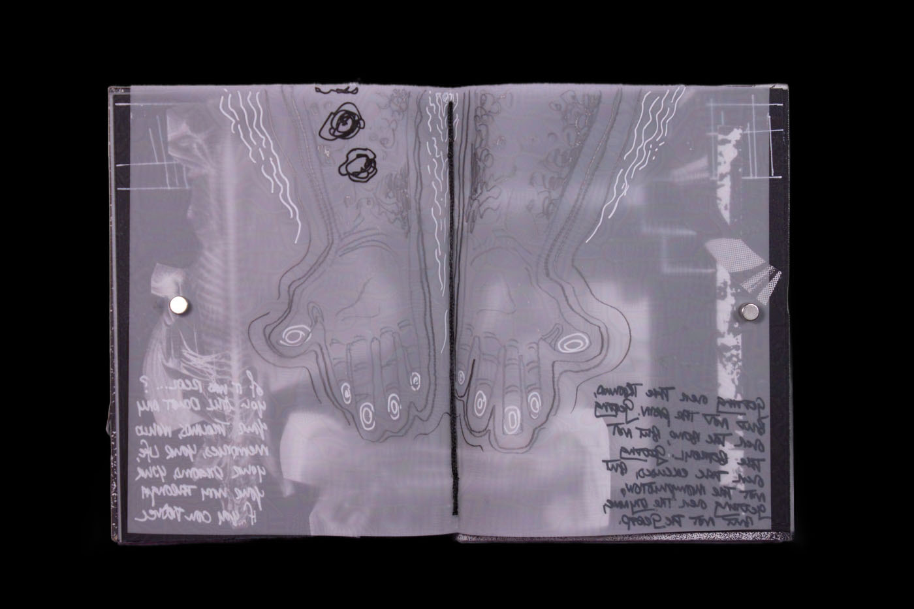
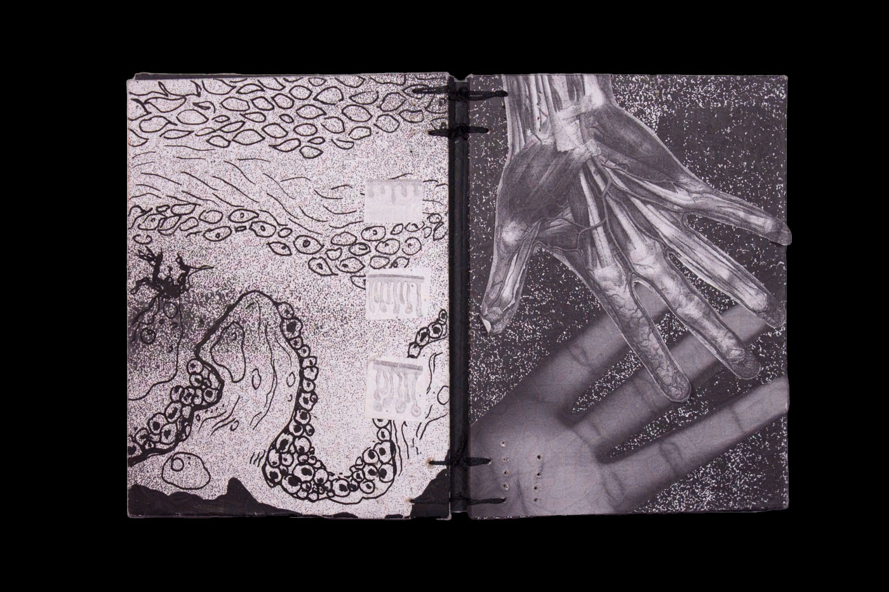
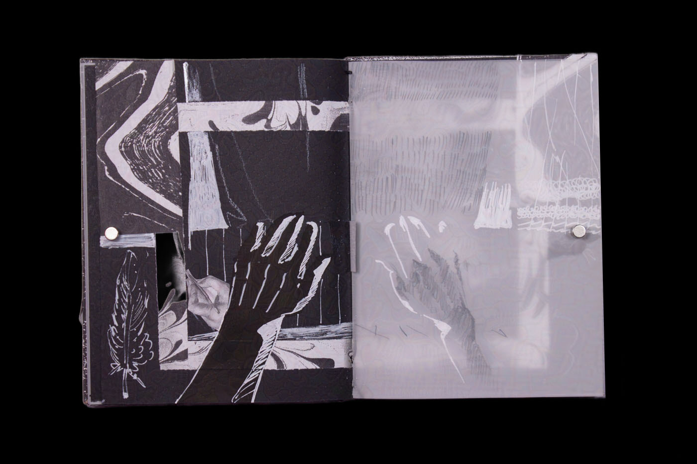

Hands
An abstracted autobiographical investigation of memory through book design and materiality.
Interior spread.
Hands is a part of my Body as Book series, which are a collection of art books mythologizing my engagements with my physicality as a form of recordkeeping. In particular, Hands iconoclasts handedness as cleanliness with performativity as a validation of domestics.
Constructed with Chipboard, Cardstock, Collage, Scanography, Vellum, Fiber Cord, Ink, and Pencil.

